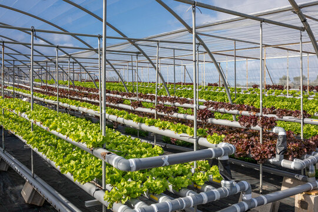
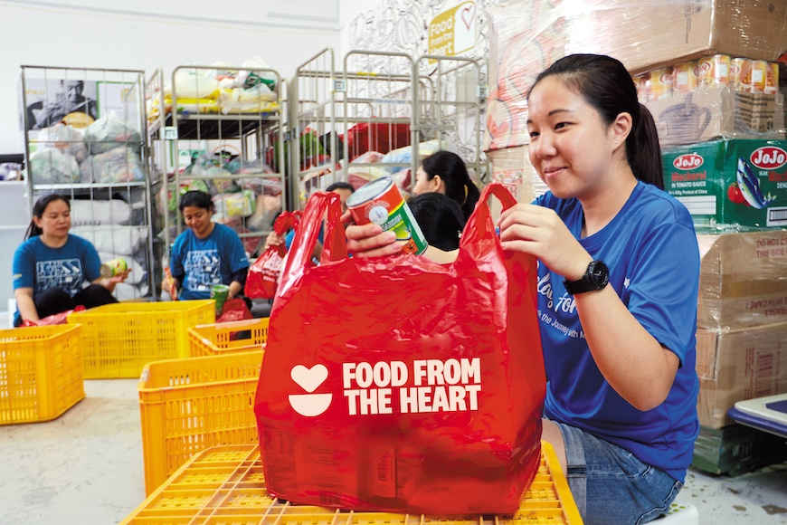

Details
Introduction - Who I Am
I am Bala Murugan Ravi, an AI student and a nature lover. I enjoy learning about technology and exploring ways to protect the environment and create a more sustainable future.
My Passion for Sustainability and Environmental Issues
Food means life. Without food, there is no life. However, even when food is available, it must be sufficient, safe, and accessible to meet people's needs and prevent hunger. In recent years, food security has been facing increasing challenges due to various global issues. I believe it is important to ensure food sustainability so that everyone has access to enough food now and in the future.
My Experiences Related to Food Sustainability


When I was a Primary 5 student in 2020, my science teacher conducted a hydroponics activity where we grew spinach. This experience taught me that hydroponics can help reduce food imports and increase local food supply. It is also useful because it does not require large areas of land for farming. Hydroponic systems can be used in vertical farms, which take up much less space while producing food efficiently.
Later, in Secondary 4 in 2025, my classmates and I donated more than 40 kg of food to Food from the Heart to help people in need. We realised that many shops and households often have excess food and may throw it away without considering donating it to those who need it. This experience helped me understand the importance of reducing food waste and supporting the community.
My Vision for a More Sustainable Future
I hope that people in Singapore will work together to achieve stronger food sustainability by reducing food imports and food wastage while increasing local food production. Through teamwork and responsible actions, we can create a future where food is sustainable and accessible for everyone.
References & Credits
Research Sources
Image Credits
- Image of tomato plant spacing - A Garden Patch
- Image of vegetables - Unsplash
- Image of growth graph - iStock
- Image of zero food waste - iStock
- Image of green recycling symbol - Shutterstock
- Image of hydroponics - Adobe Stock
- Image of Food from the Heart community food pack - Food from the Heart
- Decorative leaf graphics - generated by external JavaScript and styled with external CSS